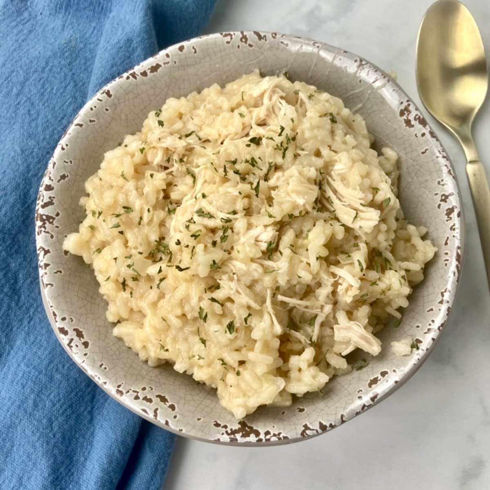

Chicken-Rice

Description
Simple after workout food.Not much of a gourmet,but gets the job done.
Ingredients
- 250g of rice
- 500g of chicken breast
- 3 eggs
- Seasonings
Steps
- Boil the rice.
- Cut chicken to nice bite size cubes.
- Add oil to pan and cook chicken on medium heat till its golden.
- Add rice and eggs to pan.
- Mix them on medium heat till eggs are cooked.
- Add salt,pepper and seasonings of your liking.
- Serve with something green sprinkled on top to look like a real dish.
- When feeling generous put little bit of sweet-chilli sauce on top for the will to live.